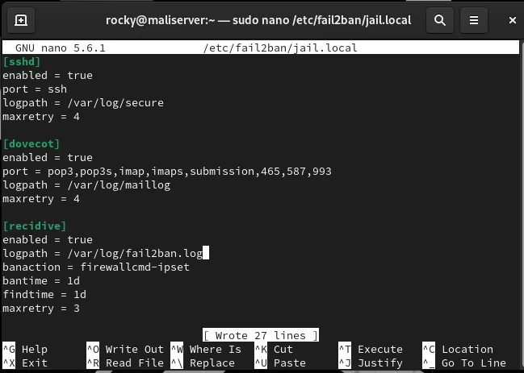

For my Systems and Network Administration coursework my group had to add one extra service to the server we had been building: Rocky Linux with BIND, Postfix, Dovecot and Apache already running. We picked Fail2ban, mostly because it protects two things we had just built, SSH and the mail server. This article is my write-up of that chapter. Everything here ran in a VirtualBox lab on a private 192.168.200.0/24 network, so nothing was exposed to the internet.
What Fail2ban actually does
It reads authentication logs, counts failed logins per IP address, and when an address crosses a threshold it asks the firewall to block it for a while. It does not make a weak password strong, and it will not stop someone who guesses right on the first try. What it does is take away the one thing brute-force bots depend on, which is unlimited retries. Think of it as a speed bump, not a wall, and keep key-based SSH login on top of it (my SSH hardening checklist covers that part).
Installing it on Rocky Linux
Fail2ban is not in the default Rocky repositories, so the first step is EPEL. I also installed fail2ban-firewalld, which lets Fail2ban ban through firewalld instead of writing iptables rules behind its back. Since the ban action needs a running firewall, I confirmed firewalld was active before doing anything else.
sudo dnf install -y epel-release
sudo dnf install -y fail2ban fail2ban-firewalld
sudo systemctl status firewalldWriting jail.local, not jail.conf
The package ships a jail.conf that gets replaced on updates, so all my changes went into /etc/fail2ban/jail.local, which Fail2ban layers on top. I defined three jails. The sshd jail bans after 4 failures. The dovecot jail covers every mail port from my earlier mail chapter (pop3, imap, submission, 465, 587, 993) with the same limit. The third one, recidive, is the interesting one: it watches Fail2ban's own log and punishes hosts that keep getting banned, with a one-day window and a one-day ban.

Checking that the jails really loaded
After sudo systemctl enable --now fail2ban, I ran sudo fail2ban-client status. It listed three jails: dovecot, recidive and sshd. Then I ran status on each one individually to confirm they all started at zero failures and zero bans. One thing I noticed: the sshd jail output said "Journal matches" instead of showing a file list, so on this install it is reading from the systemd journal rather than /var/log/secure. I have not dug into why yet, but the ban worked, so I left it.
The attack test
A config that loads is not proof that it works. I reset the password of a test account, opened a second terminal on the server running sudo tail -f /var/log/fail2ban.log, and then from the Ubuntu client I tried to SSH in as that user with wrong passwords. The log showed a "Found 192.168.200.40" line for every bad attempt, in real time.

Running sudo fail2ban-client status sshd after three attempts showed three total failures and no bans. After the fourth attempt, the same command showed one banned IP: 192.168.200.40, my own client. Nobody typed a firewall command. That is the whole point of the tool, shown on screen.

Unbanning yourself
Because I had locked out my own client, I released it with Fail2ban's own command rather than touching firewalld directly:
sudo fail2ban-client set sshd unbanip 192.168.200.40It prints 1, which means one address was removed from the jail. Learn this command before you need it. If you test from the only machine you can reach the server from, you will want it.
Things that tripped me up
- Password rejected as too short. When I reset the test password with
sudo passwd, Rocky refused it with "BAD PASSWORD: shorter than 8 characters". The pwquality rules apply even when root sets the password. A longer one went through. - "fail2ban-client: command not found" on the Ubuntu client. I typed it on the wrong machine. Fail2ban lives on the server, because that is where the logs and the firewall are. The client is the one being watched.
- Editing jail.conf. Do not. A package update can overwrite it. Use jail.local.
- Testing from your only admin machine. Keep a console session open, or use a second client, so a ban does not lock you out of the lab.
What I would change next time
A 4-attempt limit is fine for a lab, but on a real server I would pair it with key-only SSH and a longer ban time for the sshd jail. I would also test the dovecot jail with a deliberate mail-login attack, which I did not do in this round. Fail2ban is a decent first layer, as long as you remember it only reacts after the failed attempts have already happened.